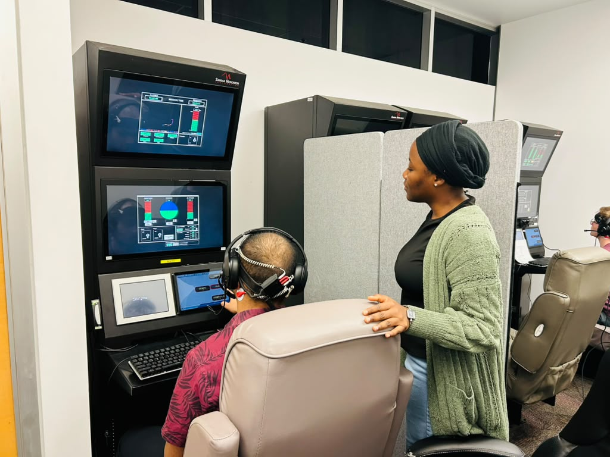
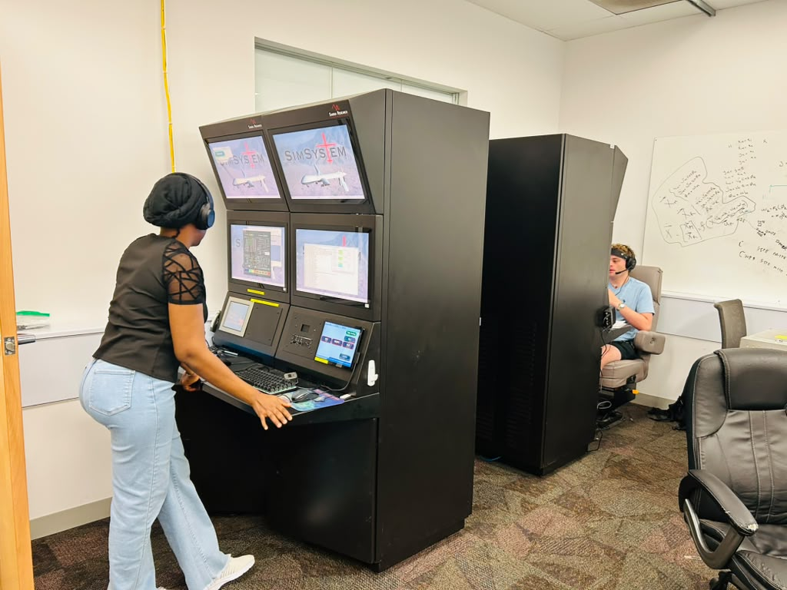
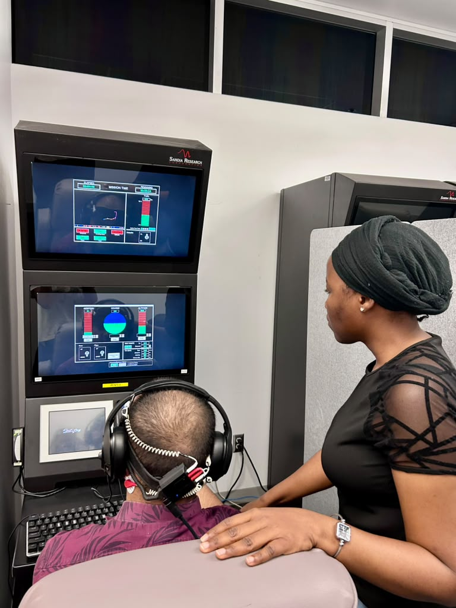

Supporting a participant during a controlled human-autonomy teaming experiment at Arizona State University.
Project Overview
As a Graduate Research Assistant in the Center for Human, Artificial Intelligence, and Robot Teaming (CHART) at Arizona State University, I contributed to a human-subjects research study evaluating the effectiveness of the NIRSense neural stimulation device.
The project investigates how neurotechnology may influence human performance, team coordination, workload, and decision-making during collaborative tasks conducted in a controlled laboratory environment.
Research Problem
Human-autonomy teams are increasingly used in aviation, robotics, healthcare, and other complex work environments. Understanding how people coordinate, communicate, and perform alongside advanced technologies is important for designing safe, effective, and human-centered systems.
This project applies human factors methods to evaluate team performance, workload, coordination, and participant experience during laboratory-based collaborative tasks.
Research in Action


Research Objectives
- Evaluate the effectiveness and usability of the NIRSense neural stimulation device.
- Examine human performance and team coordination during collaborative tasks.
- Collect and analyze behavioral and experimental research data.
- Support controlled human-subject research in human-autonomy teaming.
- Contribute to the development of safer and more effective human-centered technologies.
My Contributions
- Served as a Graduate Research Assistant on a human-subjects research project.
- Contributed to experimental design, study preparation, and protocol refinement.
- Supported participant sessions and laboratory research operations.
- Collected, organized, and prepared behavioral and experimental data for analysis.
- Assisted with the implementation of research protocols and participant procedures.
- Contributed to survey selection, study documentation, and measurement planning.
- Collaborated with researchers across human factors, neurotechnology, and human-autonomy teaming.
- Supported evaluation of experimental procedures, device usability, and data quality.
Research Methods
- Human-subject experimental research
- Within-subjects experimental design
- Behavioral data collection
- Human-autonomy teaming
- Laboratory experimentation
- Survey and measurement design
- Quantitative data analysis
- Research protocol implementation
Research Tools and Measures
- NIRSense neural stimulation device
- Human-autonomy teaming simulation environment
- NASA Task Load Index
- Perceived coordination measures
- Participant comfort and usability measures
- Behavioral and task-performance data
Skills Demonstrated
Human Factors Research • Human-Subjects Research • Experimental Design • Human-Autonomy Teaming • Neurotechnology • Behavioral Data Collection • Survey Design • Research Protocol Development • Laboratory Research • Quantitative Analysis • Interdisciplinary Collaboration
Research Impact
This project contributes to research examining how neurotechnology can support human performance and collaboration in complex team environments. The work integrates human factors, experimental design, behavioral research, and advanced technology evaluation.
The broader goal is to improve understanding of how emerging technologies can be designed and evaluated to support safer, more effective, and more human-centered teamwork.
Research Appointment
Graduate Research Assistant
Center for Human, Artificial Intelligence, and Robot Teaming (CHART)
Arizona State University
Worked under the supervision of Professor Jamie C. Gorman on a study evaluating the effectiveness of the NIRSense neural stimulation device, with responsibilities involving laboratory-based data collection, study implementation, and analysis.